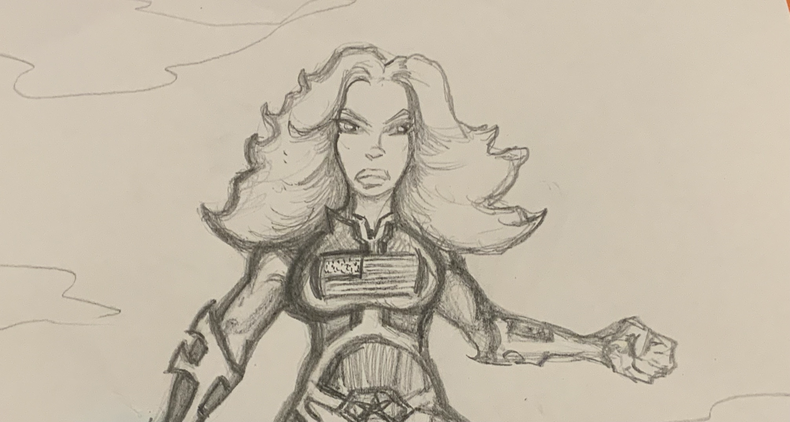

J-50
Jennifer Greene was on top of the world. She had a family she loved, friends she could count on, and a boyfriend she pictured sharing her future with. She was a high school All-American volleyball player and a Division I college prospect, with plans to serve her country as a military officer. Everything she’d worked toward was finally within reach.

Then, one night on the way home from a family outing, tragedy struck.
Jennifer woke up in police custody. The detectives asked her to walk them through the drive home, but she could only remember pieces. By the time she was released to her aunt and uncle’s house to await trial, her family had been torn apart, her friends didn’t know what to believe, and her boyfriend was gone. The police thought she was responsible. Jennifer wished she could tell them they were wrong.
Eventually, Jennifer snuck out of her aunt’s house and went back to her family home. Surrounded by photographs, she felt the weight of everything she’d lost. Down in her father’s lab, one drink from his secret stash became another, and grief gave way to anger. Her next clear memory was of the lab in shambles and the police taking her back into custody.

Weeks later, Jennifer gripped the bars of her cell, and the steel bent beneath her fingers. She hadn’t even been trying. She could pull those bars apart and walk out.
She let go.
Some part of her still believed she belonged there.
Jennifer’s emerging abilities hadn’t gone unnoticed. One evening, a stranger arrived outside her cell carrying an envelope marked M.O.D.U.
Her life would never be the same.

Currently in Development

Original Sketch by Chandler Windham
Return to Robot Afro Press